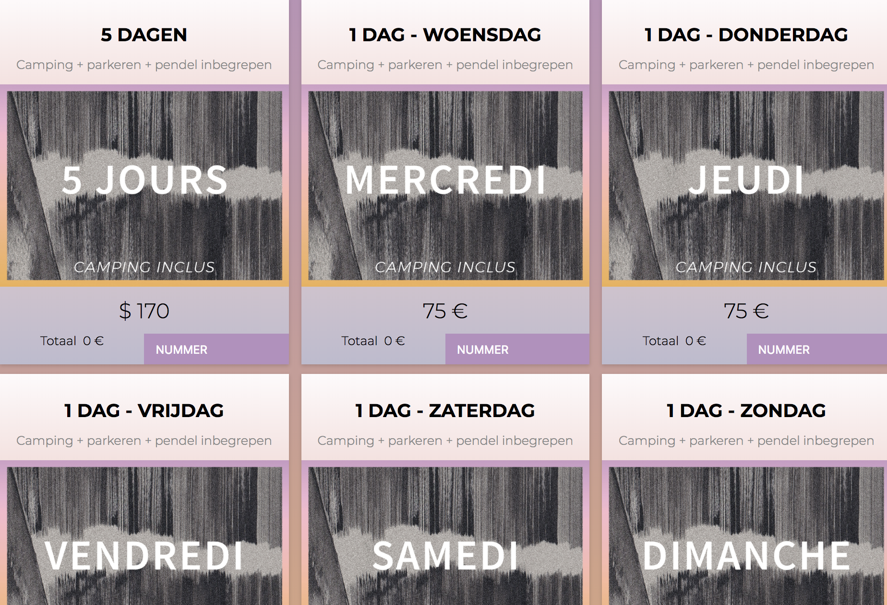

Positief
Opvallende knop
Opvallende knop
Rechts bovenaan een opvallende paarse knop voor de tickets. Door deze opvallende knop kan de bezoeker onmiddelijk de tickets boeken.

Rechtermenubalk
Hier staan alle belangrijkste pagina's voor de bezoeker

In de rechterbalk kan je naar de pagina duurzaam Dour navigeren. Dit is een leuk idee want het milieu is hip bij jongeren.
Bestelmogelijkheid
Deze site geeft een overzichtelijke bestelmogelijkheid. De bezoeker kan gemakkelijk een keuze maken tussen de verschillende tickets.
Negatief
Zoekfunctionaliteit
Zoekfunctionaliteit
Er was nergens een zoekbalk te vinden. Dit kan handig zijn als de gebruiker snel iets wil opzoeken.
Talen
Omdat dit festival niet in België is, is er geen mogelijkheid om de website in het Nederlands te vertalen. Dit is jammer want het festival is ook populair bij de Belgische jongeren.